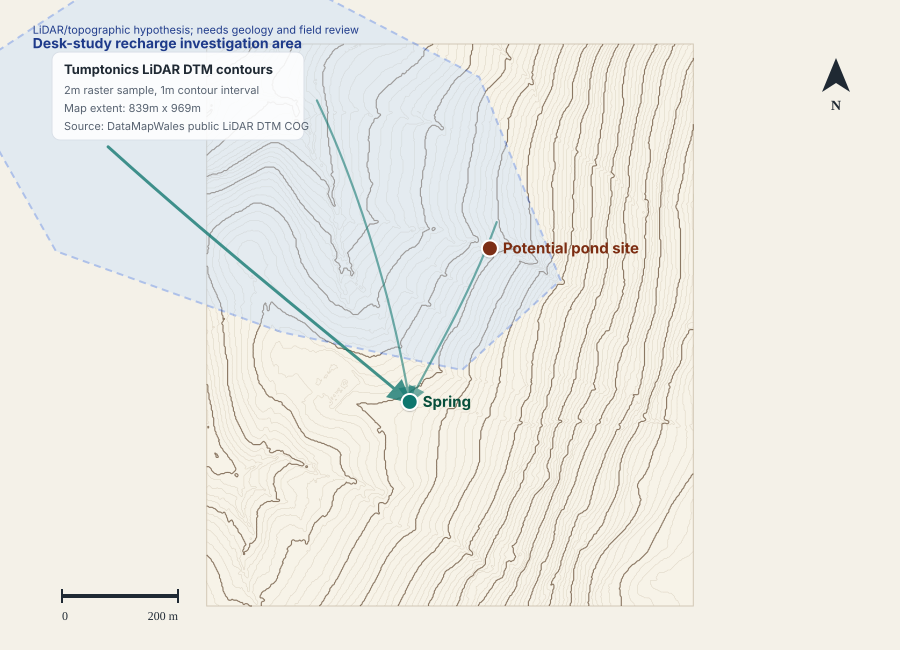

Tumptonics Spring Recharge - First Pass Mapping Note
Pre-visit desk study: use LiDAR mapping and a simple water-balance scenario to identify where a contour shelterbelt or recharge strip could hold more water on site. The site visit should replace the weakest guesstimates with field infiltration tests and observations.

Worked Scenario
The worked scenario estimates up to 7.57 million litres/year of additional water held or infiltrated on site if a 1 ha contour shelterbelt/recharge strip were placed to intercept runoff from 3 ha of compacted upslope pasture. This is not an intervention proposal before the site visit, and it is not claimed as measured spring recharge.
| Input | Value used | Evidence level |
|---|---|---|
| Rainfall | Roughly 900 mm/year | Guesstimate |
| Upslope compacted pasture runoff | 30% of annual rainfall | Guesstimate |
| Runoff captured by hypothetical feature | 70% design-target scenario | Guesstimate |
| Feature runoff after intervention | 2% of rainfall on feature | Guesstimate |
| Tree water use / interception tax | 5.12 ML/year over 1 ha | Guesstimate |
| Slope and local terrain | LiDAR-derived contours | Mapped |
Field Test Plan
- Use three bottomless tins/rings close together in each test zone.
- Pre-wet each ring, then repeat in the same ring and use the second run as the measured value.
- Measure water drop with a tape measure and record elapsed time.
- Test existing pasture and any candidate contour line identified during the visit; optionally test a nearby young woodland/tree-line analogue.
- If one ring is more than twice as fast as another in the same zone, treat the ground as patchy and add another cluster.
Why This Is Plausible
Pontbren is the strongest story citation: a Welsh farmer-led shelterbelt project where researchers measured substantially higher infiltration and reduced runoff under tree shelterbelts compared with adjacent grazed pasture. It supports the shelterbelt/runoff logic, while site-specific spring connection still needs review.
Limitations
The upslope investigation area on the map is a topographic hypothesis only. It should be checked against bedrock geology, superficial deposits, aquifer designation, groundwater vulnerability mapping and field evidence before being described as a spring catchment.
Source links
- DataMapWales LiDAR Data Download
- The Pontbren Project report
- Pontbren summary: tree planting and reduced runoff
- NRCS Soil Health Infiltration guide
- FAO ring infiltration method
- British Geological Survey WMS services
- BGS aquifer designation data
- DataMapWales / NRW Source Protection Zones
- NRW groundwater vulnerability metadata
- JobDone Tumptonics Water Walk map